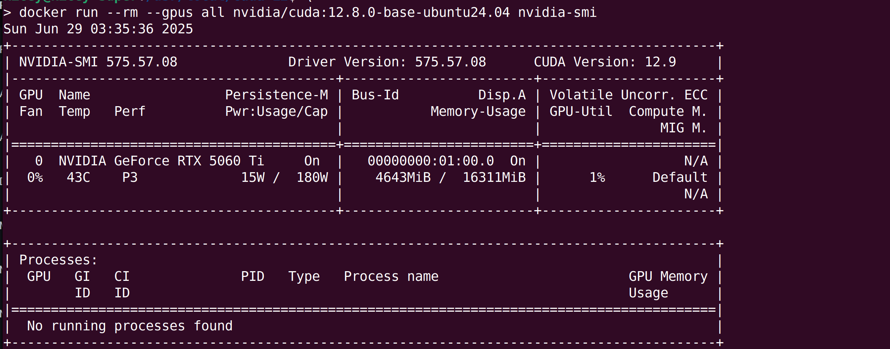

Installing NVIDIA Driver CUDA Toolkit on Ubuntu for Newer GPUs (e.g. 5060 Ti)
Hello everyone! If you've recently upgraded to a newer NVIDIA GPU, like the powerful 5060 Ti, and are running Ubuntu 24.04 or later, you might have run into issues installing the latest drivers and CUDA Toolkit directly from the standard Ubuntu repositories. This is often because newer hardware requires more up-to-date drivers than what's typically available in the default package sources.
This blog post will guide you through the process of installing the NVIDIA driver (specifically version 575 or newer) and CUDA Toolkit (version 12.8 or newer) by utilizing the official NVIDIA-maintained repositories. This method ensures you get the latest compatible software and allows for easier future updates.
1. Prerequisites and System Preparation
Before we begin, ensure your system is up to date and you have the necessary tools.
- Operating System: Ubuntu 24.04 LTS (or newer)
- GPU: NVIDIA 5060 Ti (or similar recently released NVIDIA GPU requiring newer drivers)
- Internet Connection: Required for downloading packages.
It's highly recommended to back up your system before proceeding with major driver installations.
First, update your package lists and upgrade any existing packages:
You might also want to ensure you have the necessary kernel headers and necessary packages for build is installed, as they are crucial for driver compilation:
sudo apt update
sudo apt install gcc
sudo apt install make
sudo apt install linux-headers-$(uname -r) -y
2. Adding the Official NVIDIA Repository
The key to installing newer drivers is to add the official NVIDIA repository to your system's APT sources. This repository provides the latest drivers and CUDA Toolkit versions directly from NVIDIA.
Just follow this nvidia official link CUDA Toolkit for ubuntu https://developer.nvidia.com/cuda-downloads?target_os=Linux&target_arch=x86_64&Distribution=Ubuntu&target_version=24.04&target_type=deb_network
After adding the repository, update your package list again to fetch the new package information:
wget https://developer.download.nvidia.com/compute/cuda/repos/ubuntu2404/x86_64/cuda-keyring_1.1-1_all.deb
sudo dpkg -i cuda-keyring_1.1-1_all.deb
sudo apt-get update
3. Installing the NVIDIA Driver and cuda toolkit
Now that the NVIDIA repository is configured, you can install the recommended driver. For your 655060 Ti, a driver version of at least 575 is required.
Installing the cuda-toolkit
May you don't want so recent version of cuda-toolkit. The least cuda-tookit version supporting 50 series gpu is 12.8.
Installing the driver
The cuda-drivers is also OK. But the the open source one nvidia-open is recommended.
During the installation, you may noticed here is something like
Building initial module nvidia/575.57.08 for 6.8.0-62-generic
Sign command: /usr/bin/kmodsign
Signing key: /var/lib/shim-signed/mok/MOK.priv
Public certificate (MOK): /var/lib/shim-signed/mok/MOK.der
If you enable secure boot, you should enroll the public certificate. If secure boot is disabled on your host, you can ignore the output while installation and skip the 4th section.
4. Addressing Secure Boot and MOK Management
If Secure Boot is enabled on your system, the NVIDIA kernel modules, which are signed with NVIDIA's public key, will not be loaded automatically by default. You will need to enroll this public key into your system's Machine Owner Key (MOK) list.
- Use command to import the nvidia public certificate
You will be prompted to enter password 2 or 3 times. Decided by if you are prompted to enter the password for sudo at first. The last two password is for secure-boot and the ensurement the password(prompted to enter the same password again).
-
MOK Management Screen: Upon rebooting, your system will likely boot into a "MOK management" or "Secure Boot Key Management" screen (this is part of your UEFI/BIOS, not Ubuntu itself).
-
Enroll MOK: Navigate through the options to "Enroll MOK", then "continue". You will then be prompted to enter the password you set just now. This step officially registers NVIDIA's public key with your Secure Boot system.
-
Continue Boot: After successfully enrolling the key, choose to continue booting your system.
5. Add the CUDA Toolkit Binary to Path
We've install the cuda toolkit in the 3rd step. But the some executable binaries are not in the path. So, you can only access them by the absolute path.
After installation, it's good practice to add CUDA to your system's PATH and LD_LIBRARY_PATH. You can do this by adding the following lines to your ~/.bashrc (or ~/.zshrc if you use Zsh) and then sourcing the file:
echo 'export PATH=/usr/local/cuda-12/bin$:$PATH' >> ~/.bashrc
echo 'export LD_LIBRARY_PATH=/usr/local/cuda-12/lib64:$LD_LIBRARY_PATH' >> ~/.bashrc source ~/.bashrc
Verify your installation by checking nvcc --version:
You should see something like:
nvcc: NVIDIA (R) Cuda compiler driver
Copyright (c) 2005-2025 NVIDIA Corporation
Built on Tue_May_27_02:21:03_PDT_2025
Cuda compilation tools, release 12.9, V12.9.86
Build cuda_12.9.r12.9/compiler.36037853_0
6. Setting Up Docker with GPU Support (NVIDIA Container Toolkit)
For developers using Docker, you'll want to enable your containers to access the GPU. This requires the NVIDIA Container Toolkit. Fortunately, since you've already added the NVIDIA repository, installing it is straightforward.
-
Install the NVIDIA Container Toolkit:
-
Configure Docker to Use NVIDIA Runtime: You need to tell Docker to use
nvidiaas its default runtime for GPU-enabled containers. And restart docker to make it work. This involves modifying Docker's daemon configuration.
You will say something like this in your /etc/docker/daemon.json
- Test Your Docker GPU Setup: You can test your setup by running a simple CUDA-enabled Docker image:
You should see the output of nvidia-smi from inside the Docker container, indicating successful GPU access.

7. Conclusion
By following these steps, you should have successfully installed the latest NVIDIA driver and CUDA Toolkit on your Ubuntu system, enabling your newer GPU for development and computation. You've also set up Docker to seamlessly leverage your GPU within containers.
References
- https://developer.nvidia.com/cuda-downloads?target_os=Linux&target_arch=x86_64&Distribution=Ubuntu&target_version=24.04&target_type=deb_network
- https://forums.developer.nvidia.com/t/we-would-like-to-know-when-the-nvidia-drivers-for-5060ti-on-ubuntu-will-be-released/331207
- https://forums.developer.nvidia.com/t/nvidia-drivers-not-working-while-secure-boot-is-enabled-after-updating-to-ubuntu-24-04/305351/6?u=kiceyscream
- https://forums.developer.nvidia.com/t/could-not-select-device-driver-with-capabilities-gpu/80200
- https://docs.nvidia.com/datacenter/cloud-native/container-toolkit/latest/install-guide.html